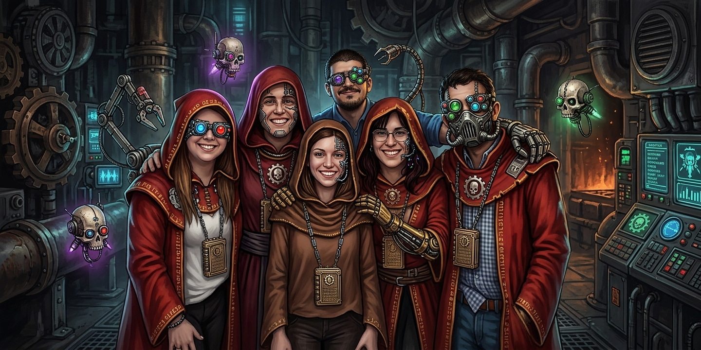

Sobre Nosotros

Tecnología con carácter. Equipamiento con identidad
BastiónTech nace de la idea de que los periféricos son mucho más que herramientas: también pueden expresar personalidad. Nuestra propuesta combina tecnología, funcionalidad y diseño industrial con una estética inspirada en universos de ciencia ficción, creando productos pensados para quienes buscan darle carácter propio a su espacio de juego y trabajo.
Nuestra Identidad
En BastiónTech, cada producto tiene una identidad propia. Desde sus nombres hasta sus colores y detalles visuales, buscamos transmitir la esencia de un universo tecnológico, militar y futurista. Las facciones, la maquinaria y la estética de la ciencia ficción son nuestra fuente de inspiración para transformar periféricos cotidianos en piezas que se destaquen dentro de cualquier estación.
Nuestra Propuesta
Buscamos reunir periféricos y accesorios que combinen prestaciones, comodidad y personalidad visual. Queremos ofrecer distintas opciones para que cada persona pueda encontrar el equipamiento que mejor se adapte a sus necesidades y construir un espacio que refleje su propio estilo.
Tu Estación. Tu próxima misión
Cada espacio tiene una función. Cada equipo, un propósito. En BastiónTech, te invitamos a equipar tu estación y prepararte para lo que venga.